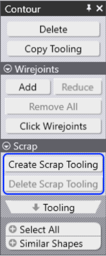
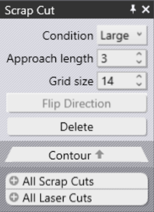
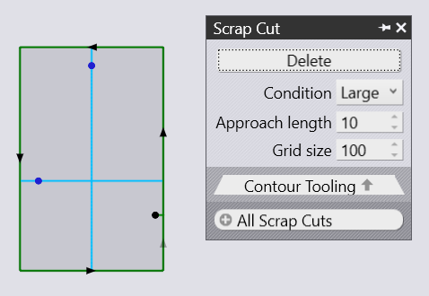
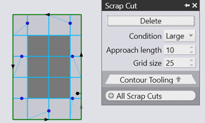

Optimizing Stability with Scrap Cutting
Holes can be scrap cut automatically without any manual input using finishing rules. Scrap cutting will help you reduce the collision risk by cutting larger cutouts. With an overlay of several rules, you could avoid having small holes affected by the finishing rule.
Scrapping a Hole by Slicing
It is possible to generate tool to slice and destroy a hole. The hole is sliced into smaller pieces, which can then drop through the slats. You can create this tooling from the 'Contour' editor (the same editor from where you can add and remove wirejoints) to a contour. These options are available only for closed inner contours.
 
Create Scrap Tooling: Click on this tooling to create tooling that slices the hole into smaller pieces. Any existing micro-joints on the contour will be removed. It is because a contour that is wirejointed cannot be scrapped. Conversely, if you add a wirejoint to a contour that is scrapped, the software will automatically delete the scrap tooling.
Delete Scrap Tooling: This deletes existing scrap tooling for the selected contour. This button is enabled only if the contour has any existing scrap tooling assigned to it. Below, you can see a circle hole being scrapped into smaller pieces with a grid.
The above parameters control this tooling scrap grid cell width.
This is the width of each cell in the grid that is created by the tooling. The value entered here must be such that the resultant square is guaranteed to fall through the slats, irrespective of its position.
There are two ways to define the scrap cutting:
-
within the part
-
on a complete nest
The manual way to implement scrap cutting into a job:
Click on the contour you want to toggle this setting. Then, the Laser Cut menu will appear. Further, you have to open the Contour menu and from there select Scrap Cut.
Here, you get access to the most important settings you want to apply to your part.
| Option | Description |
|---|---|
Delete |
Use delete in order to remove an existent scrap cut. |
Condition |
Select the desired condition of your scrap cut.
|
Approach length |
This is the distance of the pierce point (for the step cuts) from the actual contour. After piercing, the laser will approach the contour and then, at an appropriate distance (determined by the kerf width and slope of the contour at that place), makes a 180 turn and continue cutting the stairs that start at that level. |
Grid Size |
The lower the number, the more grids you get. |
 
The automatic way to implement scrap cut into a job:
There is a second way to implement a scrap cut to your part or to your whole job via finishing rules. In order to follow that, you’ll need to work with the finishing rules. You can find these settings by clicking Settings → Cut Settings. You need then to add the scrap cut as a new finishing rule. You can proceed like that by pressing the " " button and then select cut up scrap.
The final step is to update the changes made by recomputing the tooling.
Shortcut key is A.